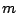

The distance between an input word and a dictionary word is computed taking into account deletions, insertions and substitutions of characters: an inserted or deleted character is penalized with 3 points, a character substitution is penalized with 5 points, while matches are not penalized.
Each word can have from 1 to 9 characters. Only the lowercase characters from 'a' to 'z' are allowed.
If multiple words in the dictionary have the same distance to the input word, they should be ranked in lexicographic order and the first one should be selected.
The dictionary is followed by a line containing , the number of words of text. The text consists of lines of 10 words separated by white space, except the last one that can have less words.
5 ate carrot rabbit the white 6 the white rabit ate ate carott
the white rabbit ate ate carrot
20 a abbey adapted ago almost but clumsy had he joined living manuel monk not of that the to way year 22 the clumsy momk manuel had joined the abey almost a year ago but he had not adapted to that way of leaving
the clumsy monk manuel had joined the abbey almost a year ago but he had not adapted to that way of living